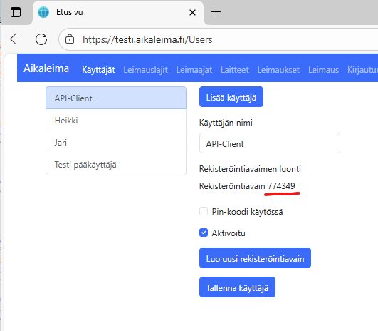
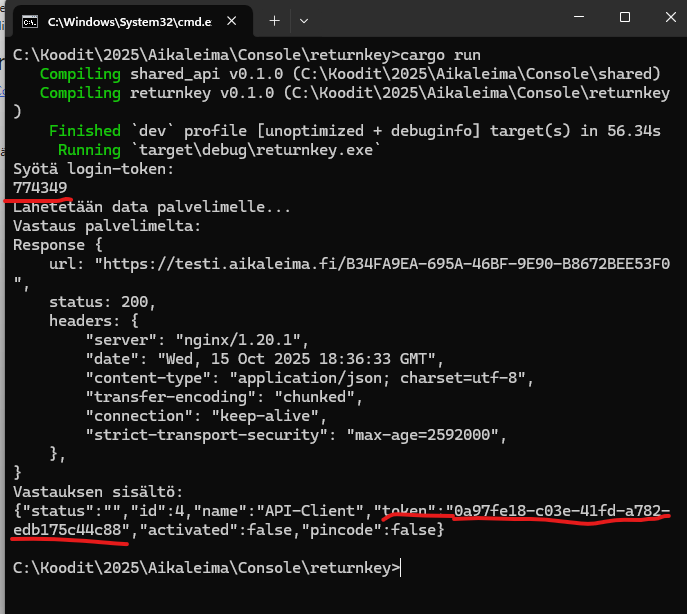
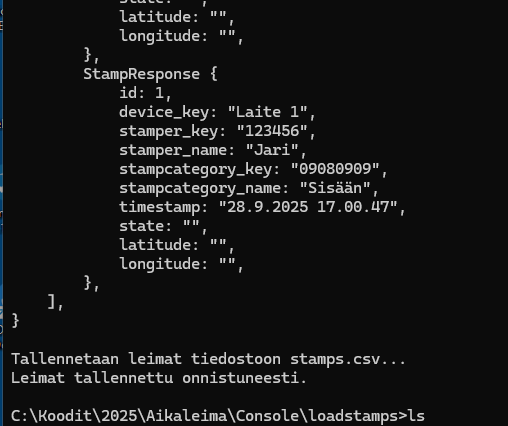
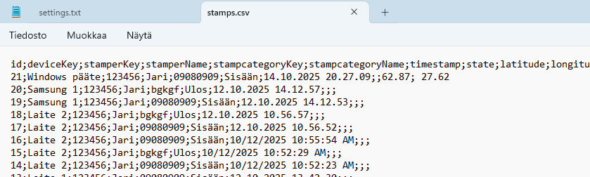

Asiakasjärjestelmät
Sovelluksen tietoja voi hyödyntää monenlaisissa asiakasjärjestelmissä. Esimerkiksi yritys voi viedä Exceliin työntekijöiden leimaustiedot ja käyttää niitä palkanlaskennassa.
Jatkossa on tavoitteena julkaista ohjelma lähdekoodeineen, jonka avulla leimaustiedot voi hakea suoraan API-rajapinnan kautta. Siihen liittyen on myös mahdollista
toteuttaa leimaaja- ja leimauslajitietojen ylläpito rajapinnan kautta.
GPS-sijainnin käyttöönotto mahdollistaa esimerkiksi kilpailujen järjestäjille tiedon kilpailijoiden sijainnista ja reaaliaikaisen karttaesityksen toteuttamisen internetissä.
Eräs variaatio, jonka olen toteuttanut, on purjehduskilpailun seuranta kartalla ja tulosten laskenta.
Tämä vaatii kuitenkin kilpailuasetuksen käyttöönoton. Silloin pitää lisätä myös lähtö- ja maalilinjat sekä välipisteet.
Leimaukset tallentuvat reaaliaikaisesti (1-sek - 1 min välein) tapahtuviksi aloitus- ja lopetusleimausten välillä.
Malliohjelmat sovelluksen API-rajapinnan hyodyntämisen
Nyt ensimmäinen ohjelma on toteutettu. Ohjelma on on toteutettu RUST-kielellä ja voi ladata GitHubista Aikaleima-Console repository
ja kääntää sen itse. Itse käytän Windows-ympäristöä mutta ohjelmat ovat komentorivipohjaisiaja alustariippumattomia joten ne voi kääntää haluamaan ympäristöön.
Returnkey
Ohjelma palauttaa kirjautumisavaimen jota jokainen sovellus käyttää jatkossa. API-käyttöön tulee tehdä käyttäjä-hallinnassa tunnus.
minkä kertakäyttöinen avain annataan parametrina ohjelmalle ja API-kutsu palauttaa sitten pysyvän avaimen ja luo settings.txt-tiedoston
sitä sitten käytetään jatkossa muidan API:a käyttävien ohjelmien asetustiedostona.


Loadstamps
Ohjelma palauttaa leimaukset palvelimelta. Tähän tarvitaan Returkey ohjelman luoma asetustiedosto.
Ohjelma muodostaa tiedoston stamps.csv jonka voi lukea vaikkapa exceliin. Ohjelma on vielä kesken tarkoitus on että
tietojen haun jälkeen ja kun on varmistettu että tiedot on käsitelty niin ajatus on että api-kutsulla kerrotaan järjestelmään
poisto kutsu siirretyille leimauksille.

